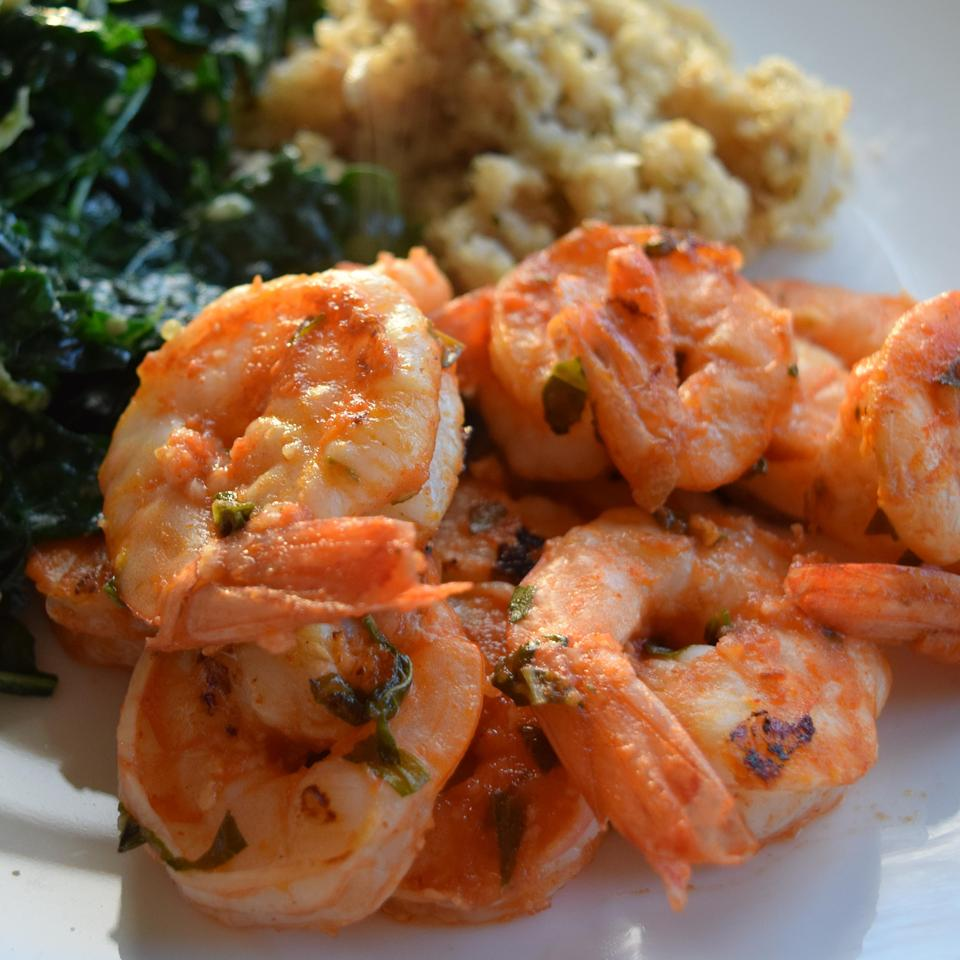

Marinated Grilled Shrimp

Freshly cooked and marinated grilled shrimp
CALLING ALL SHRIMP LOVERS! This is the recipe for you! Following these directions will give you perfectly marinated melt-in-your-mouth that you previously could only dream of.
Ingredients
- 3 cloves garlic
- 1/3 cup olive oil
- 1/4 cup tomato sauce
- 2 tablespoons red wine vinegar
- 2 tablespoons chopped fresh basil
- 1/2 teaspoon cayenne pepper
- 2 pounds fresh, peeled and deveined
- 6 each skewers
Steps
- In a large bowl, stir together the garlic, olive oil, tomato sauce, and red wine vinegar. Season with basil, salt, and cayenne pepper. Add shrimp to the bowl, and stir until evenly coated. Cover, and refrigerate for 30 minutes to 1 hour, stirring once or twice.
- Preheat grill for medium heat. Thread shrimp onto skewers, piercing once near the tail and once near the head. Discard marinade.
- Lightly oil grill grate. Cook shrimp on preheated grill for 2 to 3 minutes per side, or until opaque.